Identificadores visuais locais. Algumas marcas representam a identidade atual do clube ou federação; não são uma reprodução do escudo exato de cada temporada histórica.
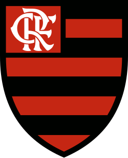
Flamengo
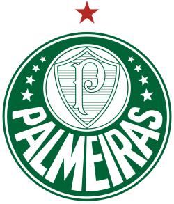
Palmeiras
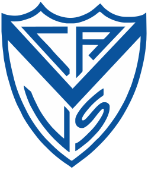
Vélez Sarsfield
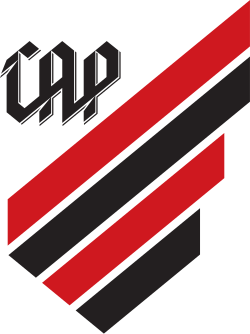
Athletico-PR
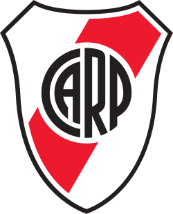
River Plate
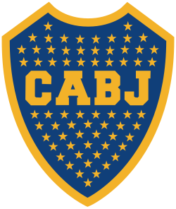
Boca Juniors
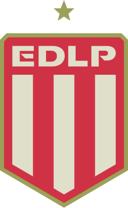
Estudiantes
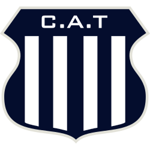
Talleres
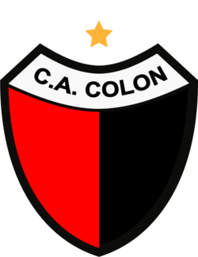
Colón
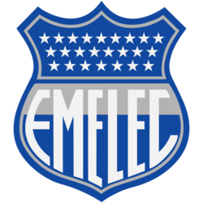
Emelec
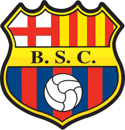
Barcelona SC
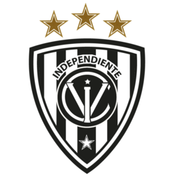
Independiente del Valle
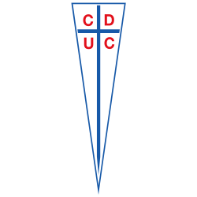
Universidad Católica
Colo-Colo
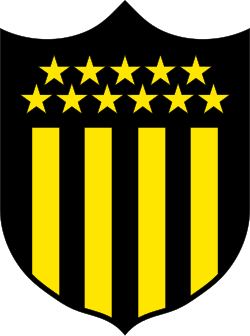
Peñarol
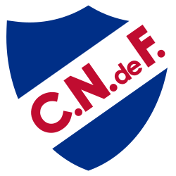
Nacional
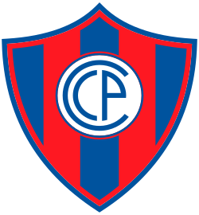
Cerro Porteño
Libertad
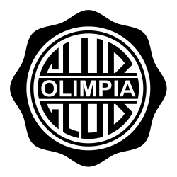
Olimpia
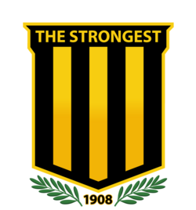
The Strongest
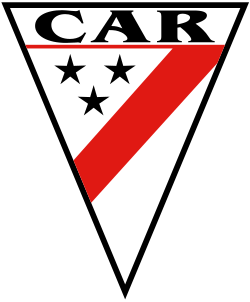
Always Ready
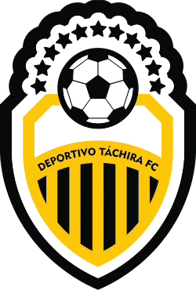
Deportivo Táchira
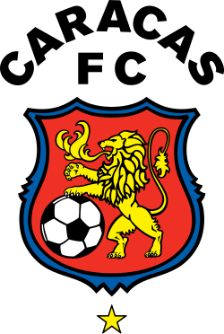
Caracas
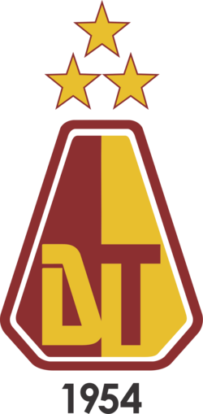
Deportes Tolima
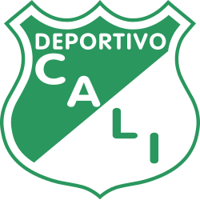
Deportivo Cali
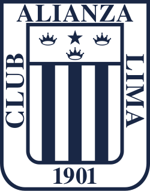
Alianza Lima
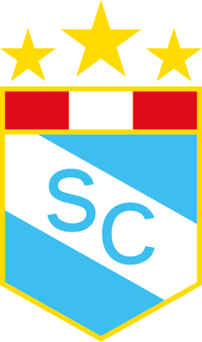
Sporting Cristal
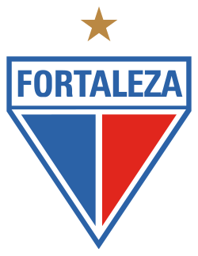
Fortaleza
Corinthians
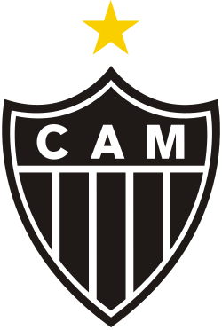
Atlético-MG
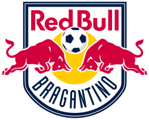
Red Bull Bragantino
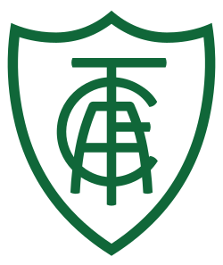
América-MG
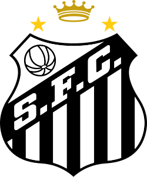
Santos
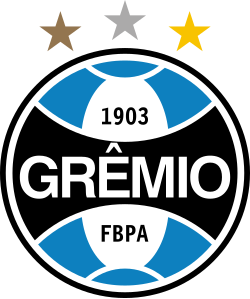
Grêmio
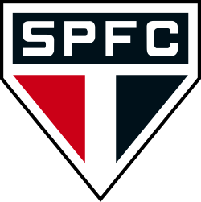
São Paulo
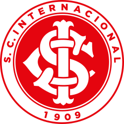
Internacional
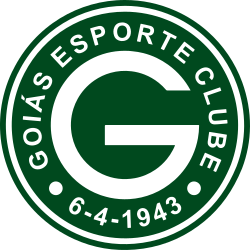
Goiás
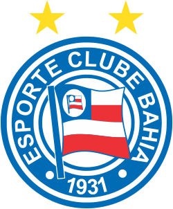
Bahia
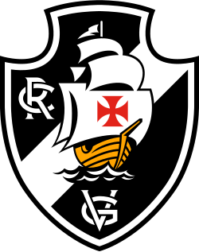
Vasco
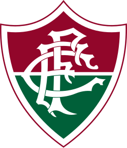
Fluminense
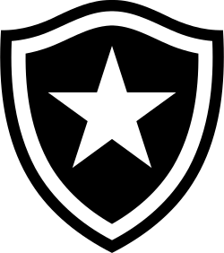
Botafogo
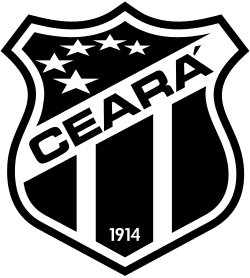
Ceará
Cruzeiro
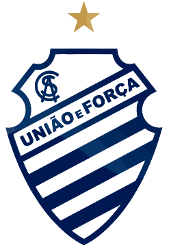
CSA
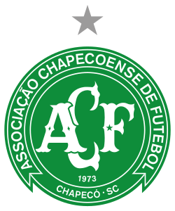
Chapecoense
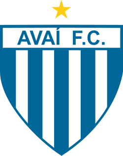
Avaí
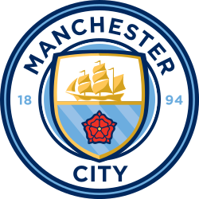
Manchester City
Inter
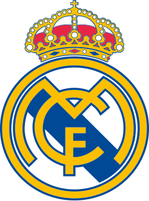
Real Madrid
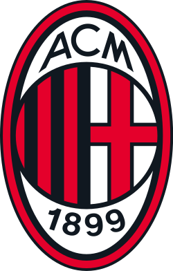
Milan
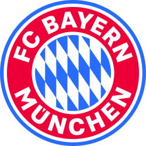
Bayern
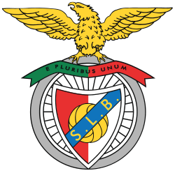
Benfica
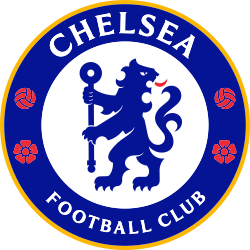
Chelsea
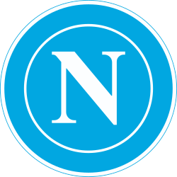
Napoli
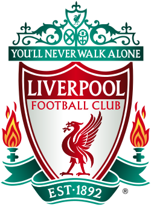
Liverpool
Porto
Tottenham
Borussia Dortmund
Paris Saint-Germain
Club Brugge
RB Leipzig
Eintracht Frankfurt
Ajax
Rangers
Atlético de Madrid
Bayer Leverkusen
Barcelona
Viktoria Plzeň
Sporting
Marseille
Salzburg
Dinamo Zagreb
Shakhtar Donetsk
Celtic
Sevilla
Copenhagen
Juventus
Maccabi Haifa
Argentina
França
Croácia
Marrocos
Brasil
Inglaterra
Portugal
Países Baixos
Japão
Coreia do Sul
Austrália
Estados Unidos
Suíça
Senegal
Polônia
Espanha
Alemanha
Bélgica
Uruguai
Gana
Camarões
Sérvia
Tunísia
Dinamarca
México
Arábia Saudita
Equador
Catar
Irã
País de Gales
Costa Rica
Canadá
Manchester United
Independiente
Racing
Argentinos Juniors
Atlético Nacional
Once Caldas
LDU Quito
San Lorenzo
Nottingham Forest
Feyenoord
Aston Villa
Hamburgo
Estrela Vermelha
PSV
Steaua Bucareste
Hungria
Suécia
Tchecoslováquia
Itália
Chile
Bulgária
Turquia
Colômbia
Peru
Argélia
Irlanda
Romênia